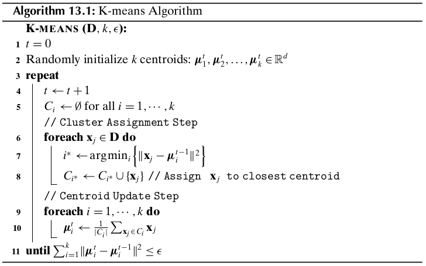
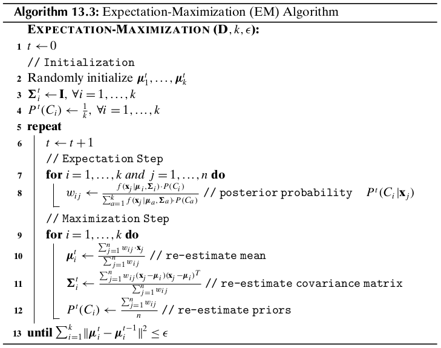

Chapter 13 Representative-based Clustering¶
Given a dataset \(\D\) with \(n\) points \(\x_i\) in a \(d\)-dimensional space, and given the number of desired clusters \(k\), the goal of representative-based clustering is to partition the dataset into \(k\) groups or clusters, which is called a clustering and is denoted as \(\cl{C}=\{C_1,C_2,\cds,C_k\}\). Further, for each cluster \(C_i\) there exists a representative point that summarizes the cluster, a common choice being the mean (also called the centroid) \(\mmu_i\) of all points in the cluster, that is,
where \(n_i=|C_i|\) is the number of points in cluster \(C_i\).
The exact number of ways of partitioning \(n\) points into \(k\) nonempty and disjoint parts is given by the Stirling numbers of second kind, given as
13.1 K-Means Algorithm¶
Given a clustering \(\cl{C}=\{C_1,C_2,\cds,C_k\}\) we need some scoring function that evaluates its quality or goodness. This sum of squared errors scoring function is defined as
Note
\(SSE(\cl{c})=\sum_{i=1}^k\sum_{\x_j\in C_i}\lv\x_j-\mmu_i\rv^2\)
The goal is to find the clustering that minimizes the SSE scores:
K-means employs a greedy iterative approach to find a clustering that minimizes the SSE objective.
The cluster assignment step take \(O(nkd)\) time because for each of the \(n\) points we have to compute its distance to each of the \(k\) clusters, which takes \(d\) operations in \(d\) dimensions. The centroid re-computation step takes \(O(nd)\) time because we have to add at total of \(n\) \(d\)-dimensional points. Assuming that there are \(t\) iterations, the total time for K-means is given as \(O(tnkd)\). In terms of the I/O cost it requires \(O(t)\) full database scans, because we have to read the entire database in each iteration.
13.2 Kernel K-Means¶
Assume for the moment that all points \(\x_i\in\D\) have been mapped to their corresponding images \(\phi(\x_i)\) in feature space. Let \(\K=\{K(\x_i,\x_j)\}_{i,j=1,\cds,n}\) denote the \(n\times n\) matrix, where \(K(\x_i,\x_j)=\phi(\x_i)^T\phi(\x_j)\). Let \(\{C_1,\cds,C_k\}\) specify the partitioning of the \(n\) points into \(k\) clusters, and let the corresponding cluster means in feature space be given as \(\{\mmu_1^\phi,\cds,\mmu_k^\phi\}\), where
is the mean of cluster \(C_i\) in feature space, with \(n_i=|C_i|\).
In feature space, the kernel K-means sum of squared errors objective can be written as
Consider the distance of a point \(\phi(\x_j)\) to the mean \(\mmu_i^\phi\) in feature space, which can be computed as
In the cluster assignment step of kernel K-means, we assign a point to the closest cluster mean as follows:
The fraction of points reassigned to a different cluster in the current iteration is given as
Computational Complexity
The total computational complexity of kernel K-means is \(O(tn^2)\), where \(t\) is the number of iterations until convergence. The I/O complexity is \(O(t)\) scans of the kernel matrix \(\K\).
13.3 Expectation-Maximization Clustering¶
Let \(\D\) consist of \(n\) points \(\x_j\) in \(d\)-dimensional space \(\R^d\). Let \(X_a\) denote the random variable corresponding to the \(a\)th attribute. Let \(\X=(X_1,X_2,\cds,X_d)\) denote the vector random variable across the \(d\)-attributes, with \(\x_j\) being a data sample from \(\X\).
Gaussian Mixture Model
Assume that each cluster \(C_i\) is characterized by a multivariate normal distribution, that is,
Note
\(\dp f_i(\x)=f(\x|\mmu_i,\Sg_i)=\frac{1}{(2\pi)^{\frac{d}{2}}|\Sg_i|^{\frac{1}{2}}}\) \(\dp\exp\bigg\{-\frac{(\x-\mmu_i)^T\Sg_i\im(\x-\mmu_i)}{2}\bigg\}\)
where the cluster mean \(\mmu_i\in\R^d\) and covariance matrix \(\Sg_i\in\R^{d\times d}\) are both unknown parameters. \(f_i(\x)\) is the probability density at \(\x\) attributable to cluster \(C_i\). We assume that the probability density function of \(\X\) is given as a Gaussian mixture model over all the \(k\) cluster normals, defined as
Note
\(\dp f(\x)=\sum_{i=1}^kf_i(\x)P(C_i)=\sum_{i=1}^kf(\x|\mmu_i,\Sg_i)P(C_i)\)
where the prior probabilities \(P(C_i)\) are called the mixture parameters, which must satisfy the condition
We write the set of all the model parameters compactly as
Maximum Likelihood Estimation
Given the dataset \(\D\), we define the likelihood of \(\bs\th\) as the conditional probability of the data \(\D\) given the model parameters \(\bs\th\), denoted as \(P(\D|\bs\th)\).
The goal of maximum likelihood estimation (MLE) is to choose the parameters \(\bs\th\) that maximize the likelihood
It is typical the maximize the log of the likelihood function
where the log-likelihood function is given as
We can use the expectation-maximization (EM) approach for finding the maximum likelihood estimates for the parameters \(\bs\th\). EM is a two-step iterative approach that starts from an initial guess for the parameters \(\bs\th\). Given the current estimates for \(\bs\th\), in the expectation step EM computes the cluster posterior probabilities \(P(C_i|\x_j)\) via the Bayes theorem:
Because each cluster is modeled as a multivariate normal distribution, the probability of \(\x_j\) given cluster \(C_i\) can be obtained by considering a small interval \(\epsilon>0\) centered at \(\x_j\), as follows:
The posterior probability of \(C_i\) given \(\x_j\) is thus given as
Note
\(\dp P(C_i|\x_j)=\frac{f_i(\x_j)\cd P(C_i)}{\sum_{a=1}^kf_a(\x_j)\cd P(C_a)}\)
and \(P(C_i|\x_j)\) can be considered as the weight or contribution of the point \(\x_j\) to cluster \(C_i\). Next, in the maximization step, using the weights \(P(C_i|\x_j)\) EM re-estimates \(\bs\th\), for each cluster \(C_i\). The re-estimated mean is given as the weighted average of all the points, the re-estimated covariance matrix is given as the weighted covariance over all pairs of dimensions, and the re0estimated prior probability for each cluster is given as the fraction of weights that contribute to that cluster.
13.3.1 EM in One Dimension¶
Consider a dataset \(\D\) consisting of a single attribute \(X\), where each point \(x_j\in\R\) (\(j=1,\cds,n\)) is a random sample from \(X\). For the mixture model, we use univariate normals for each cluster:
with the cluster parameters \(\mu_i,\sg_i^2\), and \(P(C_i)\).
Initialization
For each cluster \(C_i\), with \(i=1,2,\cds,k\), we can randomly initialize the cluster parameters \(\mu,\sg_i^2\), and \(P(C_i)\).
Expectation Step
The posterior probabilities are computed as
For convenience, we use the notation \(w_{ij}=P(C_i|x_j)\), and let
denote the weight vector for cluster \(C_i\) across all the \(n\) points.
Maximization Step
The re-estimated value for the cluster mean, \(\mu_i\), is computed as the weighted mean of all the points:
In terms of the weight vector \(\w_i\) and the attribute vector \(X=(x_1,x_2,\cds,x_n)^T\), we can write as
The re-estimated value of the cluster variance is computed as the weighted variance across all the points:
Let \(\bar{X}_i=X-\mu_i\1=(x_1-\mu_i,x_2-\mu_i,\cds,x_n-\mu_i)^T=\) \((\bar{x}_{i1},\bar{x}_{i2},\cds,\bar{x}_{in})^T\) be the centered attribute vector for cluster \(C_i\), and let \(\bar{X}_i^s\) be the squared vector given as \(\bar{X}_i^s=(\bar{x}_{i1}^2,\cds,\bar{x}_{in}^2)^T\). The variance can be expressed compactly as
The prior probability of cluster \(C_i\) is re-estimated as the fraction of the total weight belonging to \(C_i\), computed as
where we made use of the fact that
In vector notation the prior probability can be written as
Iteration
Starting from an initial set of values for the cluster parameters \(\mu_i,\sg_i^2\), and \(P(C_i)\) for all \(i=1,\cds,k\), the EM algorithm applies the expectation step to compute the weights \(w_{ij}=P(C_i|x_j)\).
13.3.2 EM in \(d\) Dimensions¶
For each cluster \(C_i\), we now need to estimate the \(d\)-dimensional mean vector:
and the \(d\times d\) covariance matrix:
One simplification is to assume that all dimensions are independent, which leads to a diagonal covariance matrix:
Initialization
For each cluster \(C_i\), with \(i=1,2,\cds,k\), we can randomly initialize the cluster parameters \(\mmu,\Sg_i\), and \(P(C_i)\).
Expectation Step
Maximization Step
The mena \(\mmu_i\) for cluster \(C_i\) can be estimated as
Let \(\bar\D_i=\D-\1\cd\mmu_i^T\) be the centered data matrix for cluster \(C_i\). Let \(\bar\x_{ji}=\x_j-\mmu_i\in\R^d\) denote the \(j\)th centered point in \(\bar\D_i\). We can express \(\Sg_i\) as
The covariance between dimensions \(X_a\) and \(X_b\) is estimated as
The prior probability \(P(C_i)\) for each cluster is the same as in the one-dimensional case, given as
EM Clustering Algorithm
Computational Complexity
The computational complexity of the EM method is \(O(t(kd^3+nkd^2))\), where \(t\) is the number of iterations. If we use a diagonal covariance matrix, then the complexity is therefore \(O(tnkd)\). The I/O complexity for the EM algorithm is \(O(t)\) complete databases scans because we read the entire set of points in each iteration.
K-means as Specialization of EM
K-menas can be considered as a special case of the EM algorithm, obtained as follows:
The posterior probability \(P(C_i|\x_j)\) is given as
Note
\(P(C_i|\x_j)=\left\{\begin{array}{lr}1\quad\rm{if\ }\x_j\in C_i,\rm{\ i.e.,\ if\ }C_i=\arg\min_{C_a}\{\lv\x_j-\mmu_a\rv^2\}\\0\quad\rm{otherwise}\end{array}\right.\)
13.3.3 Maximum Likelihood Estimation¶
Estimation of Mean
Estimation of Covariance Matrix
Estimating the Prior Probability: Mixture Parameters